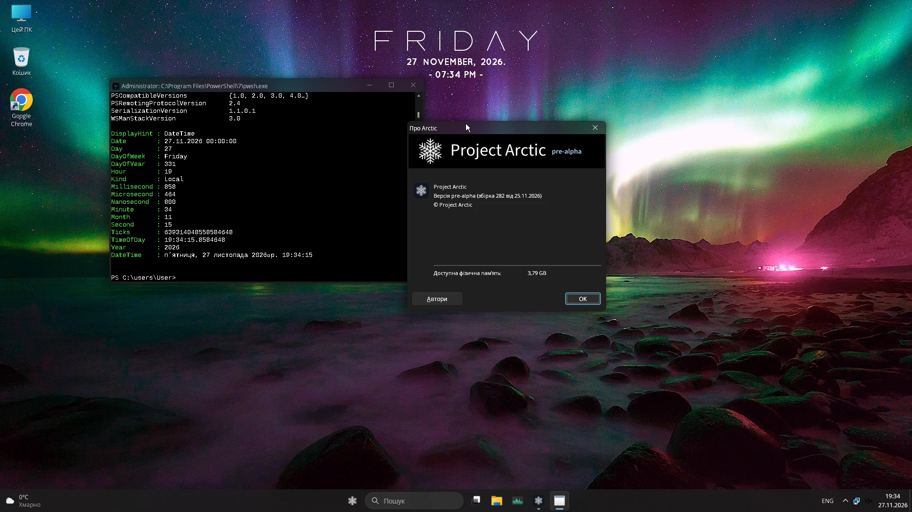
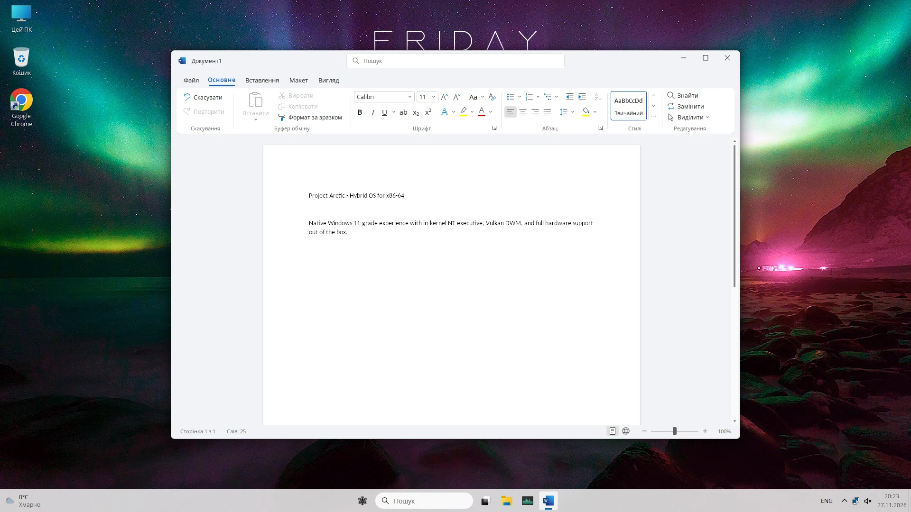

Швидка
Миттєвий старт, нативні виклики NT у ядрі та прямий композитор без затримок.
Унікальна гібридна операційна система нового покоління для x86: максимальна продуктивність, усі драйвери з коробки та бездоганна зручність щоденного користування.

Реальний знімок екрана з віртуальної машини QEMU (1920×1080)
Мінімум зайвого — максимум результату в щоденній роботі та найвимогливіших іграх.
Миттєвий старт, нативні виклики NT у ядрі та прямий композитор без затримок.
Удвічі менше споживання ОЗП у спокої й легке навантаження на систему.
Провідник із вкладками, Chrome, PowerShell 7, Git, WSL і віртуалізація KVM.
Багато ігор працюють швидше й стабільніше, ніж на Windows — DXVK, vkd3d і Vulkan.
Знайомий дизайн у стандартах Windows 11: закруглені вікна, вкладки, ефект Acrylic і миттєвий відгук.

Провідник у стилі Windows 11 із вкладками, швидким доступом і нативним диском C: на NTFS.
Реальні кадри роботи системи у віртуальній машині — від системних діалогів до PowerShell 7 і календаря.



Усе необхідне працює одразу після запуску та налаштовується під ваші вподобання.
Вбудовані інструменти тюнінгу, моніторингу та оптимізації вже з коробки: андервольт і ліміти потужності ЦП, розгін і частоти ГП, ігровий оверлей (FPS, час кадру, температури), обмежувач кадрів і автоматичний ігровий режим.
Відеокарти Intel, AMD і NVIDIA, Wi-Fi, звук, мережа й периферія запрацюють одразу з Live CD або Live USB — без ручного пошуку й зайвих інсталяторів.
Світла, темна й змішана теми, налаштування прозорості та розмиття Acrylic/Mica, стилі меню «Пуск», панелі задач, Провідника та набори значків.
Модулі NT у ядрі Linux, нативний WinHvPlatform на KVM, контейнери WSL, підтримка UEFI Secure Boot та збереження даних на реальний диск C: (NTFS).
Завантажте найновіший Live CD образ для віртуальної машини або сучасного ПК x86-64.
Статус: pre-alpha · Підтримка UEFI (Secure Boot із ARCTIC.cer) та BIOS/CSM · Рекомендовано від 4 ГБ ОЗП.